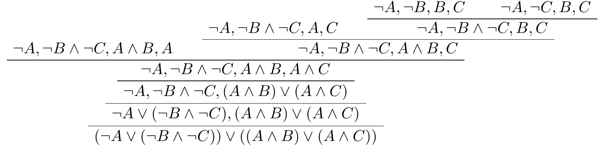

8. Deduction for Propositional Logic¶
In the study of computational complexity, a language is a set of strings over some alphabet. For example, we can consider the language \(\fn{PROP}\) consisting of all propositional formulas, the language \(\fn{SAT}\) consisting of all satisfiable formulas, and the language \(\fn{TAUT}\) consisting of all tautologies. We have seen that \(\fn{SAT}\) and \(\fn{TAUT}\) are both decidable, which is to say, there is are algorithms to decide membership in those sets. The P=NP question is precisely the question as to whether there a polynomial time algorithm for \(\fn{SAT}\), or, equivalently, for \(\fn{TAUT}\).
Still speaking in broad terms, a proof system for a language is a relation \(P(d, x)\) between strings with the property for any \(x\), \(x\) is in the language if and only if there is a \(d\) such that \(P(d, x)\) holds. In this case, we say that \(d\) is a proof of membership for \(x\). We typically require that checking a proof is easy, say, by requiring that \(P(d, x)\) runs in polynomial time. This is often easy to do by putting a lot of information into \(d\). NP is the class of languages that have a polynomial time proof system with the additional property that for every \(x\) in the language, there is a proof of membership \(d\) whose length is polynomially bounded in the length of \(x\). The language \(\fn{SAT}\) is in NP because there are short proofs of satisfiability, namely, the satisfying assignments.
When it comes to propositional logic, when we talk about proof systems, we generally mean a proof system for \(\fn{TAUT}\). In other words, a proof system for propositional logic is supposed to show that a formula is valid. It can therefore also be used to establish unsatisfiability, since a formula \(A\) is unsatisfiable if and only if \(\lnot A\) is valid.
Assuming we have a particular proof system in mind, we write \(\proves A\) to mean that there is a proof of \(A\). Remember that we use \(\models A\) to mean that \(A\) is valid. The property that \(\proves A\) implies \(\models A\) is known as soundness, and the property that \(\models A\) implies \(\proves A\) is known as completeness. We want a proof system for propositional logic to be sound and complete.
Given that the set of tautologies in propositional logic is decidable, why do we need a proof system? The complexity of the decision procedures provides one answer: as far as we know, deciding whether or not something is a tautology takes exponential time in the worst case. From a theoretical standpoint, it is not clear whether proof systems can do substantially better; the question as to whether there is a polynomial time polynomially-bounded proof system for propositional logic is equivalent to the question as to whether NP = coNP, which is an open question. But, in practice, checking a proof is usually much more efficient than determining that something is a tautology from scratch.
Another concern is reliability. Fast decision procedures for propositional logic are highly optimized and sometimes buggy. Most modern SAT solvers can be asked to output a proof to justify the claim that the input is unsatisfiable. Checking the output with an independent checker adds confidence that the claim is correct.
Yet another reason to be interested in formal notions of proof is that they provide more faithful models of informal proof, the process by which mathematicians establish that mathematical claims are true. Finally, when we turn to first-order logic, we will see that there is no decision procedure for validity. In fact, even fairly restricted versions of the question can be undecidable. In cases like that, the best we can do is search for proofs and counterexamples, with no guarantee that either will succeed in finite time. In other words, proof systems for first-order logic are essential.
The notation \(\Gamma \proves A\) is used to express that \(A\) is provable from a set of hypotheses \(\Gamma\). The notation \(\proves A\) therefore abbreviates \(\emptyset \proves A\). In this more general setting, soundness says that if \(\Gamma \proves A\), then \(\Gamma \models A\), and completeness says that if \(\Gamma \models A\), then \(\Gamma \proves A\). If \(\Gamma\) is the finite set \(\{ B_1, \ldots, B_n \}\), then \(\Gamma \models A\) is equivalent to \(\models B_1 \land \cdots \land B_n \limplies A\). So, for many purposes, we can focus on provability and validity without hypotheses. If the set \(\Gamma\) is infinite, however, we cannot express \(\Gamma \models A\) in those terms. For most of this chapter, we will not worry about infinite sets of hypotheses, since mechanized reasoning generally has to work with finite representations. But we will discuss the case where \(\Gamma\) is infinite in Section 8.5.
When it comes to talking about formal proofs, the words proof, deduction, and derivation are often used interchangeably. The last two are sometimes useful to distinguish formal derivations from ordinary (informal) mathematical proofs.
8.1. Axiomatic systems¶
Historically, one way of describing a proof system for propositional logic is to give a list of axioms, like this one:
\(A \limplies (B \limplies A)\)
\((A \limplies (B \limplies C)) \limplies ((A \limplies B) \limplies (A \limplies C))\)
\(A \limplies (B \limplies A \land B)\)
\(A \land B \limplies A\)
\(A \land B \limplies B\)
\(A \limplies A \lor B\)
\(B \limplies A \lor B\)
\((A \limplies C) \limplies ((B \limplies C) \limplies (A \lor B \limplies C))\)
\(\lnot \lnot A \limplies A\).
These are really axiom schemas, which is to say, we have an axiom for every choice of \(A\), \(B\), and \(C\). The only rule of inference in the system is modus ponens, which is the rule “from \(A\) and \(A \limplies B\) conclude \(B\).” A proof of a formula \(A\) from hypotheses \(\Gamma\) is a sequence of formula \(C_1, \ldots, C_m\) such that every \(C_i\) is either:
an axiom,
a hypothesis, or
consequence of two earlier formulas \(C_j\) and \(C_k\) using modus ponens.
This proof system is sound and complete. Proving soundness is straightforward: you only need to check that each axiom is valid and that modus ponens preserves truth. This enables us to show, by induction, that each line of a proof \(C_1, \ldots, C_m\) of \(A\) from \(\Gamma\) is true under an assignment \(\tau\), assuming every formula in \(\Gamma\) is. Proving completeness requires more work. But axiomatic systems are no longer of much practical interest: they do not provide convenient means of modeling informal proofs, and they are not useful for automated reasoning or search. We will therefore set them aside and focus our attention on other types of proof systems.
8.2. A sequent calculus¶
Let \(\Gamma\) be a finite set of propositional formula in negation normal form. The next calculus we will consider is designed to prove that the disjunction of the formulas in \(\Gamma\) is valid, which is to say, for every truth assignment \(\tau\), at least one of the formula in \(\Gamma\) is true. If \(A\) is a formula, we write \(\Gamma, A\) instead of \(\Gamma \cup \{ A \}\). The rules are as follows:
\[\begin{prooftree} \AXC{$\Gamma, p, \lnot p$} \end{prooftree}\] \[\begin{prooftree} \AXC{$\Gamma, A$} \AXC{$\Gamma, B$} \BIC{$\Gamma, A \land B$} \end{prooftree}\quad\quad \begin{prooftree} \AXC{$\Gamma, A, B$} \UIC{$\Gamma, A \lor B$} \end{prooftree} \]
The first rule says that either something in \(\Gamma\) is true, or \(p\) is true, or \(\lnot p\) is true. The second rule says that if either something in \(\Gamma\) is true or \(A\) is true, and either something in \(\Gamma\) is true or \(B\) is true, then either something in \(\Gamma\) is true or \(A \land B\) is true. The third rule says that if either something in \(\Gamma\) is true or \(A\) is true or \(B\) is true, then either something in \(\Gamma\) is true or \(A \lor B\) is true. If we take these to be statements about truth values relative to some truth assignment \(\tau\), these rules are clearly sound with respect to the semantics.
The set \(\Gamma\) is called a sequent. (More specifically, it is called as one-sided sequent; we’ll see two-sided sequents below.) A system of rules like this is therefore called a sequent calculus. As with axiomatic systems, we can think of a proof as a sequence of lines, but it is also common to represent proofs diagrammatically, as trees whose nodes are labeled by sequents. The following example provides a proof of the NNF equivalent of \(A \land (B \lor C) \limplies (A \land B) \lor (A \land C)\).
It is probably easiest to read this from the bottom up.
Remember that saying that a sequent \(\Gamma\) is valid in our semantics means that for every truth assignment \(\tau\), we have \(\tval{A}_\tau = \top\) for some \(A\) in \(\Gamma\).
Theorem
The sequent calculus presented above is sound and complete. In other words, a sequent \(\Gamma\) is provable if and only if it is valid.
Proof
The soundness direction is easy. Suppose there is a proof of \(\Gamma\). Let \(\tau\) be any truth assignment. We have already noted that each rule is sound, which is to say, if the premise or premises are true under an assignment, then so is the conclusion. By induction, we have that every sequent in the proof is true under assignment \(\tau\).
Proving completeness is usually trickier. In this case, we can use the fact that the rules of the calculus are bidirectional: any truth assignment that refutes the conclusion of a rule has to refute one of the premises. We can also use the fact that reading each rule backward decreases the number of binary connectives.
We prove the following by induction on the number of binary connectives: for every sequent \(\Gamma\), either \(\Gamma\) is provable, or there is a truth assignment that makes every formula in \(\Gamma\) false. If \(\Gamma\) has no binary connectives, then it is a set of literals. If \(\Gamma\) contains a complementary pair of literals \(P\) and \(\lnot P\), it is an axiom, and otherwise there is an assignment that makes it false. For the inductive step, \(\Gamma\) must have a \(\land\) or a \(\lor\). Applying the corresponding rule, we have either the premises are valid or there is a counterexample to one of them. In the first case, \(\Gamma\) is valid, and in the second case, there is a counterexample to the conclusion.
Notice that this gives us yet another decision procedure for propositional logic: start with a sequent \(\Gamma\) (which can consist of a single formula, if you want), and apply the rules backward. If you reach an axiom on each leaf, you have a proof. If one branch fails to terminate with an axiom, reading off a counterexample to the leaf yields a counterexample to \(\Gamma\). This is an important idea in automated reasoning, namely, it is desirable to search for a proof in such a way that failure implies the existence of a counterexample.
What we have described is more precisely a cut-free sequent calculus. It is also sound to add the cut rule:
\[\begin{prooftree} \AXC{$\Gamma, A$} \AXC{$\Gamma, \mathord{\sim}A$} \BIC{$\Gamma$} \end{prooftree}\]
Here \(\mathord{\sim}A\) is the negation operator for negation-normal form formulas, which switches \(\land\) and \(\lor\) and switches positive and negative literals. Proofs with cuts can be more efficient proofs without them, but we have seen that the calculus is complete without them.
The cut-free sequent calculus is closely related to tableau proof systems that are also commonly used in automated reasoning. In the sequent proof above, there is a lot of needless repetition of formulas; tableau representations do a better job of recording only what changes as we go up the tree. Another difference is that tableau proof systems usually don’t require that the formulas are in negation normal form. Rather, the rules of a tableau system correspond to the sequent rules for the negation-normal-form equivalents. Since \(A \limplies B\) is equivalent to \(\lnot A \lor B\), this requires changing \(A\) to \(\lnot A\) as we move up the tree. To avoid introducing new connectives, tableau systems often annotate formulas with emph{polarities}, so that \(A^+\) represents \(A\) and \(A^-\) represents \(\lnot A\). The most jarring difference between sequent calculi and tableau systems is that the latter are often described in terms of search for a satisfying assignment rather than searching for a proof. For example, the rule in the sequent calculus that says
to find a proof of \(A \land B\), split and find a proof of \(A\) and a proof of \(B\)
becomes
to find a satisfying assignment to \(A \lor B\), split and find a satisfying assignment to \(A\) or a satisfying assignment to \(B\).
The automated reasoning community is split between people who like to think in terms of searching for proofs and people who like to think in terms of searching for models. It is therefore important to learn how to speak both languages, and to be able to translate between them on the fly.
8.3. Resolution¶
Given that the sequent calculus implicitly corresponds to a decision procedure for propositional logic, it is natural to ask whether there is a proof system that corresponds more closely to DPLL, the decision procedure that was the focus of Chapter 6. We now describe such a system.
A resolution proof is designed to refute a CNF formula, that is, to prove that it is unsatisfiable. Let \(\Gamma\) be a CNF formula, represented as a set of clauses. As in Section 6.3, we can assume that none of the clauses contain repeated literals or a complementary pair, and we can think of each clause as a set of literals. If \(C\) is a clause and \(\ell\) is a literal, we write \(C, \ell\) for \(C \lor \ell\). The resolution rule derives a new clause from an old one:
\[\begin{prooftree} \AXC{$C, p$} \AXC{$D, \lnot p$} \BIC{$D \lor D$} \end{prooftree}\]
The rule says that if either \(C\) or \(p\) is true, and either \(D\) or \(\lnot p\) is true, then \(C \lor D\) has to be true. A resolution proof of a clause \(C\) from a set of clauses \(\Gamma\) is a sequence of steps (or a labelled tree) that obtains \(C\) from \(\Gamma\) using instances of the resolution rule. A resolution refutation of \(\Gamma\) is a resolution proof of the empty clause from \(\Gamma\).
Theorem
A CNF formula \(\Gamma\) has a resolution refutation if and only if it is unsatisfiable.
Resolution can therefore be understood as a proof system for propositional logic in the following way: given any formula \(A\), put \(\lnot A\) in CNF, and look for a resolution refutation. Such a refutation is a proof of \(A\). The theorem above says that this system is sound and complete: \(A\) is valid if and only if \(\lnot A\) is unsatisfiable, which happens if and only if there is a refutation of \(\lnot A\).
Proof
Soundness follows straightforwardly from the fact that the resolution rule preserves truth under any truth assignment, while the empty clause is unsatisfiable.
To prove completeness, we use induction on the number of propositional variables to show that if \(\Gamma\) is unsatisfiable, there is a resolution refutation of \(\Gamma\). If there are no variables, the fact that \(\Gamma\) is unsatisfiable means that it must be the set consisting of the empty clause, and we are done.
In the induction step, let \(P\) be any variable that occurs in \(\Gamma\). If \(\Gamma\) is unsatisfiable, then so are \(\tval{\Gamma}_{[P \mapsto \top]}\) and \(\tval{\Gamma}_{[P \mapsto \bot]}\). By the inductive hypothesis, both of these are refutable.
Remember the relationship between \(\tval{\Gamma}_{[P \mapsto \top]}\) and \(\Gamma\): in the former, we remove all the clauses that include \(P\) and delete \(\lnot P\) from the remaining clauses. So a resolution refutation of the empty clause from \(\tval{\Gamma}_{[P \mapsto \top]}\) uses only the clauses of \(\tval{\Gamma}\) that don’t contain \(P\), possibly with \(\lnot P\) removed. Restoring \(\lnot P\) to all the initial clauses yields either a proof of the empty clause or a proof of \(\lnot P\).
In the first case, we have a proof of the empty clause from \(\Gamma\), and we are done. Otherwise, applying the inductive hypotheses to \(\tval{\Gamma}_{[\lnot P \mapsto \bot]}\) and repeating the previous argument, we obtain either a proof of the empty clause or a proof of \(P\). Once again, in the first case, we are done. Otherwise, we apply the resolution rule to the proof of \(P\) and the proof of \(\lnot P\), and we have a proof of the empty clause.
We can once again view the completeness proof as a decision procedure in disguise. In fact, the strategy of picking a variable and trying to refute \(\tval{\Gamma}_{[P \mapsto \top]}\) and \(\tval{\Gamma}_{[P \mapsto \bot]}\) simultaneously is exactly the splitting rule of DPLL, formulated in terms of demonstrating unsatisfiability rather than searching for a satisfying assignment. We can formulate the theorem above in more constructive terms as follows:
Theorem
For any CNF formula \(\Gamma\), either \(\Gamma\) is satisfiable or there is a resolution refutation.
Remember that at any point in the DPLL search, we have a partial assignment \(\tau\) that we are trying to extend to a satisfying assignment to \(\tval{\Gamma}_\tau\). If we fail, we then have to give up on \(\tau\), backtrack, and try another path. To extract either a satisfying assignment or a resolution proof from the result, it suffices to show the following constructively:
For any partial truth assignment \(\tau\), either \(\tval{\Gamma}_\tau\) is satisfiable or there is a resolution proof of a clause \(C\) from \(\Gamma\) such that \(\tval{C}_\tau = \bot\).
This yields the desired conclusion when \(\tau\) is the empty assignment, since the only clause that evaluates to \(\bot\) under the empty assignment is the empty clause.
We will sketch an explanation of how to read off the information above from the DPLL search, and we will leave it as an exercise for you to fill in the details. Remember that there are three steps that are interleaved in DPLL:
splitting on a variable \(p\)
unit propagation
removing pure literals
Unit propagation can be viewed as a special case of the splitting rule: If a CNF formula contains a unit clause with literal \(\ell\), then splitting on \(\ell\) fails immediately on one branch, and the other branch corresponds to the result of applying unit propagation.
Reasoning about the pure literal rule is more subtle. Suppose \(\ell\) is pure in \(\tval{\Gamma}_\tau\), and consider the DPLL search starting from \(\tval{\Gamma}_{\tau[\ell \mapsto \top]}\), which is a subset of \(\tval{\Gamma}_\tau\). If DPLL finds a satisfying assignment to \(\tval{\Gamma}_{\tau[\ell \mapsto \top]}\), it can be extended to a satisfying assignment to \(\tval{\Gamma}_\tau\) by mapping \(\ell\) to \(\top\). On the other hand, for any clause \(C\) such that \(\tval{C}_{\tau[\ell \mapsto \top]} = \bot\), we have \(\tval{C}_\tau = \bot\), because \(\ell\) is pure in all the clauses of \(\tval{\Gamma}_\tau\).
So we only have to deal with the splitting rule. A satisfying assignment for either branch results in a satisfying assignment for \(\Gamma\), we only only have to prove the following:
If there are a resolution proof of a clause \(C\) from \(\Gamma\) such that \(\tval{C}_{\tau[P \mapsto \top]} = \bot\) and a resolution proof of a clause \(D\) from \(\Gamma\) such that \(\tval{D}_{\tau[P \mapsto \bot]} = \bot\), then there is a resolution proof of a clause \(E\) from \(\Gamma\) such that \(\tval{E}_\tau = \bot\).
We leave the proof of this fact to you.
8.4. Natural deduction¶
We now consider a type of deductive system that was introduced by Gerhard Gentzen in the 1930s, known as natural deduction. As the name suggests, the system was designed to model the way someone might carry out an informal logical argument. As a result, the system is not particularly good for automated reasoning and proof search, though it might be a good choice if the goal is to find a human-readable proof in the end. The main interest, rather, is that it provides a nice framework for representing informal arguments. Of all the systems we consider in this section, this one is the closest to the foundation system of logic that is built in to Lean.
In natural deduction, the goal is to derive sequents of the form \(\Gamma \fCenter A\), where \(\Gamma\) is a finite set of formulas and \(A\) is a formula. The interpretation of such a sequent is, of course, that \(A\) follows from the hypotheses in \(\Gamma\). Notice that we have overloaded the symbol \(\proves\), which is ordinarily used to express the provability relation. The two are clearly related: \(\Gamma\) proves \(A\) in the ordinary sense is now interpreted as saying that there is a finite subset \(\Gamma' \subseteq \Gamma\) such that the sequent \(\Gamma \fCenter A\) is derivable in natural deduction. Sometimes people use other notation for sequents, like \(\Gamma \Rightarrow A\). But Lean also uses the \(\proves\) symbol for sequents, so we will stick with that.
We write “\(\Gamma, A\)” for \(\Gamma \cup \{ A \}\) to represent the hypotheses in \(\Gamma\) together with the additional hypothesis \(A\). The first rule is trivial: we always have
\[\begin{prooftree} \AXC{$\Gamma, A \fCenter A$.} \end{prooftree}\]
This says that \(A\) follows from any list of assumptions that includes \(A\). Most of the other connectives include introduction rules, which allow us to introduce the connective into a proof, and elimination rules, that tell us how to use them. For example, the rules for \(\land\) are as follows:
\[\begin{prooftree} \AXC{$\Gamma \fCenter A$} \AXC{$\Gamma \fCenter B$} \BIC{$\Gamma \fCenter A \land B$} \end{prooftree} \quad \quad \begin{prooftree} \AXC{$\Gamma \fCenter A_0 \land A_1$} \UIC{$\Gamma \fCenter A_i$} \end{prooftree} \]
The rules for implication are as follows:
\[\begin{prooftree} \AXC{$\Gamma, A \fCenter B$} \UIC{$\Gamma \fCenter A \limplies B$} \end{prooftree} \quad \quad \begin{prooftree} \AXC{$\Gamma \fCenter A \limplies B$} \AXC{$\Gamma \fCenter A$} \BIC{$\Gamma \fCenter B$} \end{prooftree} \]
Notice that in the introduction rule, to prove \(A \limplies B\), we temporarily assume \(A\) and show that \(B\) follows. The rules for disjunction, which codify proof by cases, are as follows:
\[\begin{prooftree} \AXC{$\Gamma \fCenter A_i$} \UIC{$\Gamma \fCenter A_0 \lor A_1$} \end{prooftree} \quad \quad \begin{prooftree} \AXC{$\Gamma \fCenter A \lor B$} \AXC{$\Gamma, A \fCenter C$} \AXC{$\Gamma, B \fCenter C$} \TIC{$\Gamma \fCenter C$} \end{prooftree} \]
For classical logic, we also add the following principle of proof by contradiction:
\[\begin{prooftree} \AXC{$\Gamma, \lnot A \fCenter \bot$} \UIC{$\Gamma \fCenter A$} \end{prooftree} \]
These rules cover a complete set of connectives, since we can define \(\lnot A\) to be \(A \limplies \bot\), define \(\top\) to be \(\lnot \bot\), and define \(A \liff B\) to be \((A \limplies B) \land (B \limplies A)\). You should think about what the natural rules for these connectives would be if we were to include them in the calculus.
As an example, here is a proof of \(A \limplies (B \limplies A \land B)\):
\[\begin{prooftree} \AXC{$A, B \fCenter A$} \AXC{$A, B \fCenter B$} \BIC{$A, B \fCenter A \land B$} \UIC{$A \fCenter B \limplies A \land B$} \UIC{$\fCenter A \limplies (B \limplies A \land B)$} \end{prooftree} \]
And here is a proof of \(A \land B \limplies B \land A\):
\[\begin{prooftree} \AXC{$A \land B \fCenter A \land B$} \UIC{$A \land B \fCenter B$} \AXC{$A \land B \fCenter A \land B$} \UIC{$A \land B \fCenter A$} \BIC{$A \land B \fCenter B \land A$} \UIC{$\fCenter A \land B \limplies B \land A$} \end{prooftree} \]
As with the sequent calculus, there are more efficient ways of representing natural deduction proofs that only show the conclusion at each node and leave the hypotheses implicit. This avoids having to repeat a long list of hypotheses at every node. There are also presentations of sequent calculi for classical logic that use two-sided sequents, as we did for natural deduction. The most effective approach is to use sequents of the form \(\Gamma \fCenter \Delta\), where \(\Gamma\) and \(\Delta\) are finite sets and we interpret the sequent as saying that if all the hypotheses in \(\Gamma\) are true, then at least one of the formulas in \(\Delta\) is true. This is aligned with the annotations of positive and negative formulas that one sometimes finds in tableau calculi.
Theorem
Natural deduction is sound and complete for classical propositional logic. In other words, a sequent \(\Gamma \fCenter A\) is derivable if and only if \(\Gamma \models A\).
We will not take the time to prove this here. One way to prove it is to show that natural deduction can simulate another calculus, like the sequent calculus, for which a completeness proof is easier.
8.5. Compactness¶
In automated reasoning, when we write \(\Gamma \models A\) to express that \(A\) is entailed by hypotheses in \(\Gamma\), we generally have the in mind case where \(\Gamma\) is finite. But the definition makes sense when \(\Gamma\) is infinite. The same is true in the when we talk about provability of \(A\) from a set of hypotheses \(\Gamma\). Now, in the case of provability, it is clear that for any set \(\Gamma\), finite or infinite, \(\Gamma \proves A\) if and only if there is a finite subset \(\Gamma' \subseteq \Gamma\) such that \(\Gamma' \proves A\). The corresponding fact about the entailment relation is also true:
Theorem (the compactness theorem for propositional logic)
For any set of propositional formulas \(\Gamma\), \(\Gamma \models A\) if and only if there is a finite subset \(\Gamma' \subseteq \Gamma\) such that \(\Gamma' \models A\).
In this chapter, we focused on the soundness and completeness theorems in the case where \(\Gamma\) is finite. But soundness carries over straightforwardly to the infinite case, and it is possible to prove completeness for arbitrary \(\Gamma\) as well. You can check that compactness follows from these stronger versions of soundness and completeness, given the fact that any proof can use only a finite number of hypotheses. Conversely, the stronger versions of the completeness theorem follows from the weaker one using the compactness theorem.
As an example of an application of the compactness theorem, imagine a finite set of oriented square tiles \(S\), all the same size, where “oriented” means that each has is a distinguished top edge. Suppose each edge of each tile is labeled with finitely many colors. A tiling of the plane with tiles from \(S\) is an ordinary arrangement of (copies of) tiles in \(S\) in an infinite square grid, like the squares on an infinite sheet of graph paper, such that adjacent edges have the same color.
Theorem
Suppose that for every natural number \(n\), there is an \(n \times n\) tiling with tiles from \(S\). Then there is a tiling of the entire plane with tiles from \(S\).
You should think about how this follows from the compactness theorem.